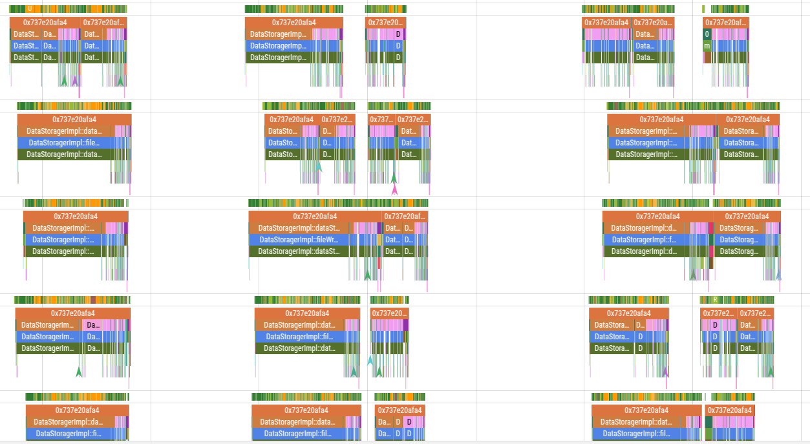
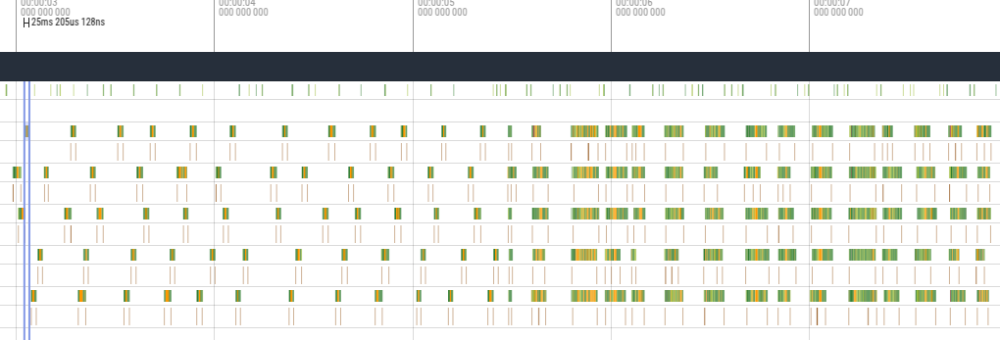

DSAC IO优化
DSAC IO优化
DSAC IO

此trace通过岩哥做的工具获取.
perflock似乎是没什么问题的, 此时的perflock对应的binder线程没有阻塞, 但这些DSAC线程启动的的确有时间差异.
DSAC IO可能有优化空间, trace上看最快的IO可以到22ms, 而慢的甚至要接近100ms. 实测IO差距没有很明显,如下:

大多还是25ms左右, 压力增大后最多会到100+ms.
暂且放下,整理一下流程.
@startuml test
DsacThreadPool -> DataStoragerImpl.dataStore
DataStoragerImpl.dataStore -> DataStoragerImpl.fileWrite
DataStoragerImpl.fileWrite …